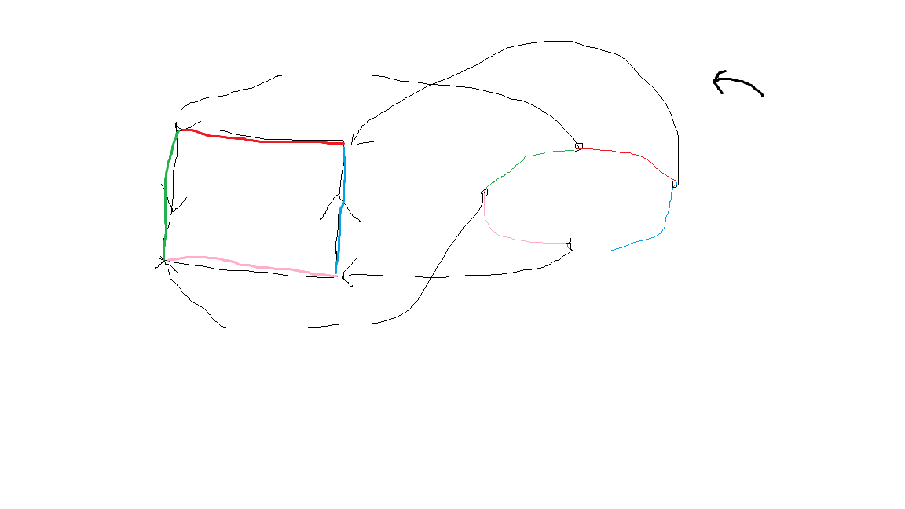

Naturally, the element a facebook works. We can also go to google if we click the image below: Generally, any html content works. We can also use relative URLs as opposed to absolute URLs. Higher relative directories can use ../dir
Now let's play the up-down game:
Now let's open open up windows: Google O'Reilly I also just learned that people put [dot] and [at] and stuff on websites so that they will not be spammed by bots since they can't identify the email address?! Contact A Call us free at (800) 555-1212 People can also dial now!! Use tel:
We first attempt to put a picture inline.